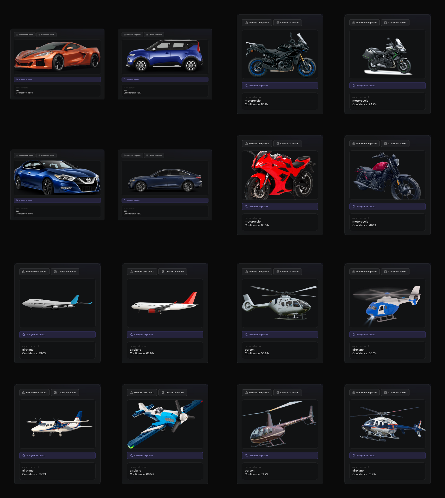
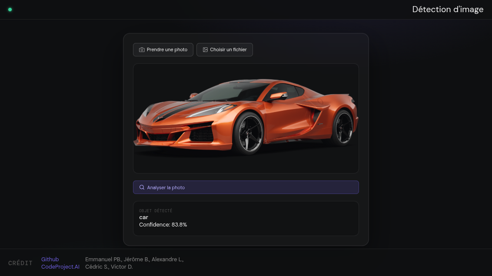
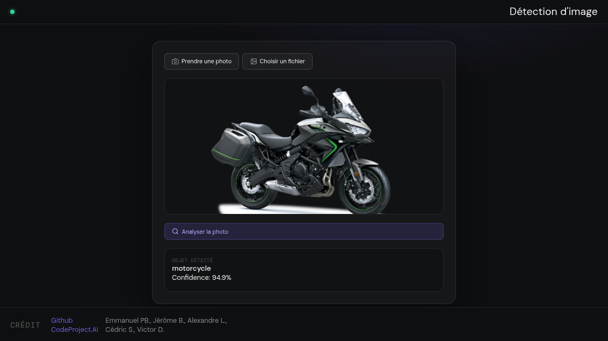
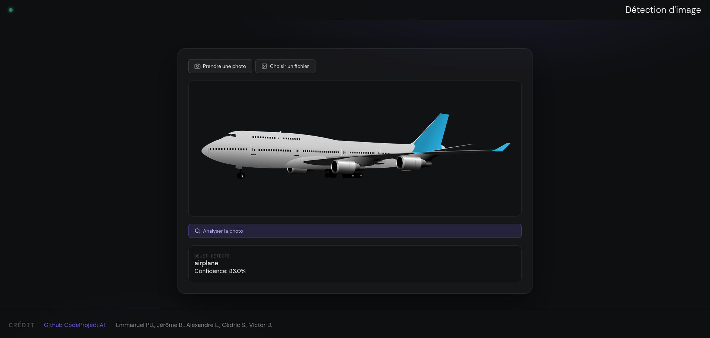
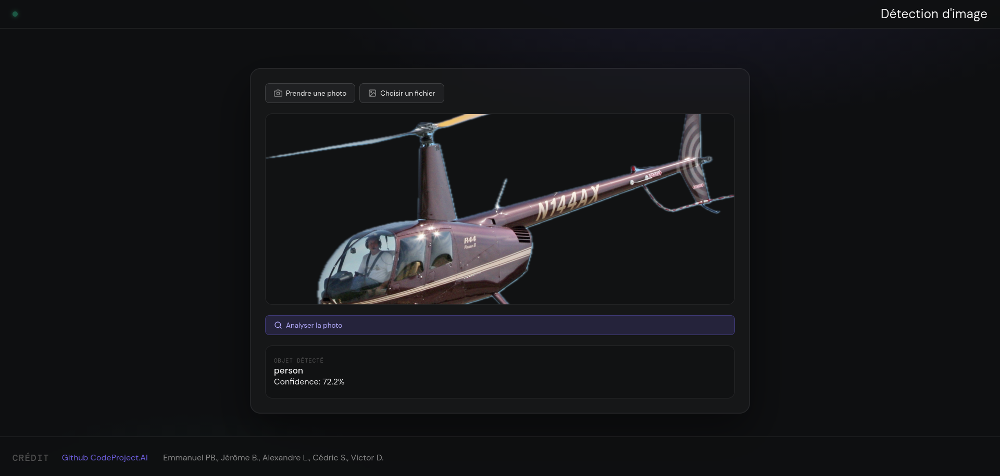

> Galerie des détections remarquables
> Entre prouesses et limites du modèle
Notre service aiimageproject.online, propulsé par CodeProject.AI, est capable d'identifier une grande variété d'objets avec un niveau de précision élevé... mais pas infaillible. Cette galerie met en lumière à la fois ses meilleures réussites et ses erreurs les plus amusantes, parce qu'un modèle performant, c'est aussi un modèle dont on comprend les limites.
Les exemples ci-dessous montrent des situations réelles où le modèle fonctionne très bien, ainsi que des cas plus ambigus, notamment lorsque plusieurs objets plausibles coexistent dans la même image ou que certains éléments sont visuellement plus distinctifs que d'autres.

Exemples de tout nos détections pour quatre type de véhicules
> Réussites
> Détections fiables et cohérentes
Dans la majorité des cas, le modèle identifie correctement les objets principaux avec une forte confiance, notamment pour les véhicules terrestres et aériens bien définis.
> Véhicules terrestres
Les voitures sont globalement très bien reconnues. Les scores élevés et stables démontrent une bonne capacité de généralisation sur différents angles et conditions d'éclairage.

Exemple de détection de voiture sportive (Voiture 1)
Voiture 1 - car : 83.8%
Voiture 2 - car : 83.3%
Voiture 3 - car : 84.9%
Voiture 4 - car : 84.8%
Les motos affichent également d'excellentes performances, avec des niveaux de confiance particulièrement élevés dans plusieurs cas.

Exemple de détection de moto (Moto 2)
Moto 1 - motorcycle : 86.1%
Moto 2 - motorcycle : 94.9%
Moto 3 - motorcycle : 85.6%
Moto 4 - motorcycle : 78.6%
Ces résultats confirment une bonne robustesse sur les objets structurés et facilement reconnaissables.
> Véhicules aériens
Les avions sont généralement bien détectés, mais certains cas montrent une baisse de confiance, notamment pour des objets atypiques comme des modèles réduits.

Exemple de détection d'avion (Avion 1)
Avion 1 - airplane : 83.0%
Avion 2 - airplane : 62.9%
Avion 3 - airplane : 85.9%
Avion 4 (jouet) - airplane : 68.5%
Les versions jouet illustrent bien ce phénomène : malgré une forme simplifiée, le modèle conserve une bonne cohérence, mais avec une incertitude plus élevée.
> Échecs et cas ambigus
> Cas des hélicoptères, les limites et confusions intéressantes
Certains cas mettent en évidence les limites du modèle, notamment lorsque plusieurs interprétations visuelles sont possibles dans une même image.
Les hélicoptères représentent un cas plus complexe. Le modèle ne parvient pas toujours à identifier clairement leur structure globale et peut s'appuyer sur des éléments visuels secondaires. Lorsque des formes humaines sont perceptibles ou interprétables (comme un pilote ou une silhouette dans le cockpit), celles-ci peuvent devenir plus “saillantes” que l'objet principal dans la décision du modèle.

Exemple de détection d'hélicoptère (Hélicoptère 3)
Hélicoptère 1 - person : 56.8%
Hélicoptère 2 (jouet) - airplane : 66.4%
Hélicoptère 3 - person : 72.2%
Hélicoptère 4 - airplane : 61.9%
Oui, parfois… un hélicoptère devient une personne. Du point de vue du modèle, le pilote est plus visible et facilement identifiable, car ses caractéristiques visuelles sont plus saillantes que celles de l'hélicoptère, qu'il ne reconnaît pas.
> Conclusion
Cette galerie met en évidence à la fois les points forts et les limites du modèle. L'objectif n'est pas seulement de montrer ses performances, mais aussi de mieux comprendre dans quelles conditions il peut se tromper.